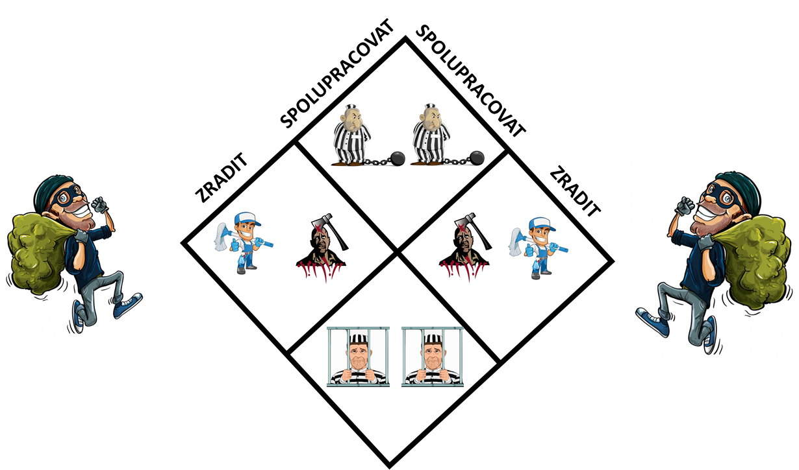
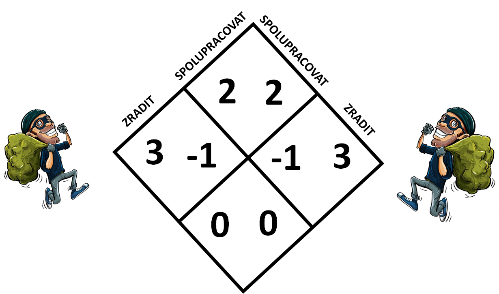
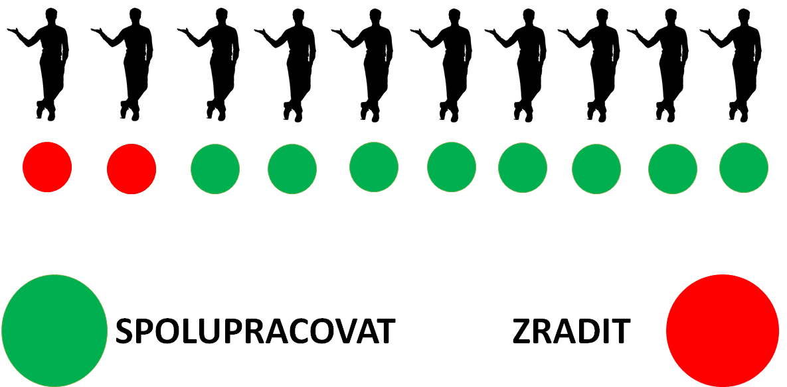
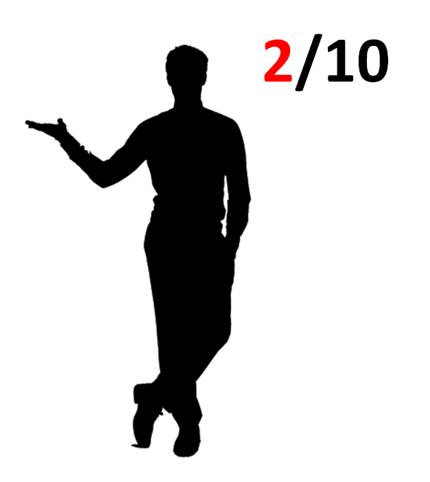
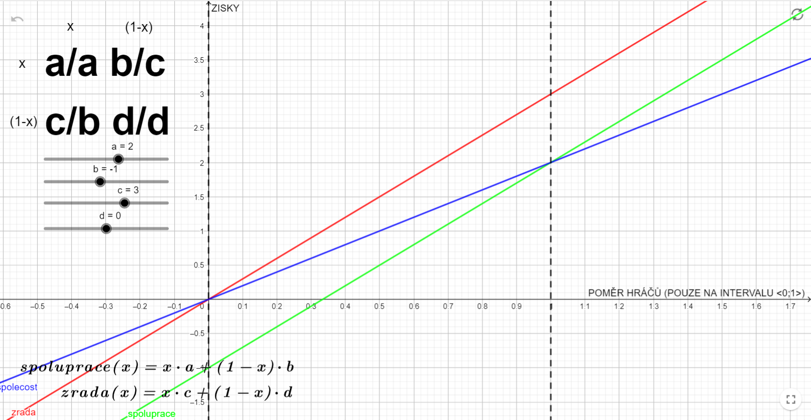

Na našem webu se věnujeme pouze situacím, které nastanou mezi dvěma subjekty. Tyto subjekty budeme nazývat hráči. Obecně se ale zdaleka nemusí jednat jen o dvě osoby. Situace můžeme převést na dvě skupiny lidí, či jednoho člověka a skupinu (ovšem skupina zde vždy vystupuje jako pouze jeden subjekt), souboj dvou armád mluvících rajčátek atd.
No a teď konečně ten slibovaný příběh. Dvě osoby (říkejme jim třeba Karel a Pepa, protože se tak skutečně jmenovali) se společně vydali vyloupit banku. Vše probíhalo jako běžná bankovní loupež až do té chvíle, než byly dopadeni policií. Policie ale neměla jasno v tom, kdo z nich se loupeže účastnil a proto potřebovala výpovědi obou vězňů.
Zde přichází naše dilema. Karel a Pepa byli odvedeni k výslechu. Každý sám samozřejmě. Proto se také nemohli dohodnout jak budou vypovídat. Situaci si nyní zjednodušme na dva případy:
1) Karel buď mohl svého kumpána zradit a prozradit na něj, že se loupeže účastnil
2) nebo ho krýt a říci, že s loupeží nemá nic společného
Pepa má na výběr stejné dvě možnosti. Odteď je nazývejme strategiemi. Sami si nyní zodpovězte otázku, kolik situací může mezi dvěma hochy celkem nastat. Jednoduchou úvahou dojdeme k číslu 4. Jsou to následující situace:
a) Oba se navzájem kryjí: Trest sice dostanou, ale není příliš velký - 2 roky na tvrdo
b) Pepa kryje Karla, ale Karel Pepu zradí: Karel vyvázne bez trestu, ale Pepa dostane 10 let na tvrdo
c) Karel kryje Pepu, ale Pepa Karla zradí: Pepa vyvázne bez trestu, ale Karel dostane 10 let na tvrdo
d) Oba se navzájem zradí: Oba dostanou 5 let na tvrdo
Znázorníme si nyní jednotlivé možnosti do matice (tabulky). V každém políčku vidíme dva obrázky. Každý z nich znázorňuje výslednou situaci jednoho vězně. Srovnejte si matici s tím co již bylo zmíněno, aby jste ji lépe pochopili.
Jednotlivé obrázky v tabulce, které znázorňují možné tresty (žádný, 2 roky, 5 let, 10 let), můžeme dát do nerovnosti podle závažnosti:
No, a tím už se dostáváme k formálnímu zápisu. Místo obrázků můžeme do matice dosadit čísla, která splňují danou nerovnost. Pokud by čísla nerovnost nesplňovala nejednalo by se už o vězňovo dilema, ale o jiný příběh! K těm se ale dostaneme až později.
Určitě si nyní říkáte, jak souvisí příběh o dvou vězních s našimi každodenními životy. Překvapivě mnoho. Zkuste se nejdříve zamyslet nad nějakou situací, která by se dala popsat zmíněnou maticí. Já zde namátkou zmíním dvě, i když by se zajisté dalo najít příkladů násobně víc.
Představte si, že stojíte ve frontě na oběd ve školní jídelně (dospělí mají totiž oproti dětem větší schopnost dodržovat konvence - což je mimo jiné také zajímavé téma teorie her - ale na to žel náš web nestačí). Jako prvního hráče si Představte sebe a jako druhého ostatní osoby ve frontě. Řekněme, že máme na výběr pouze dvě strategie:
1) Nepředbíhat
2) Předbíhat
Nejdříve se zamyslete nad souvislostí sami. Je zde krásně patrná. Zkuste si představit matici, které by situaci popisovala, a ověřte zda koresponduje s maticí vězňova dilematu.
Nyní si představte, že jste ve skupině lidí, která si mezi sebou musí rozdělit určité množství pracovních úkolů. Úkoly se musí ve výsledku rozdělit všechny. Prvním hráčem jste opět vy, druhým skupina ostatních lidí. Opět je možné hrát dvě strategie:
1) Přihlásit se o úkol
2) Nepřihlásit se o úkol
Znovu se zamyslete nad souvislostí s příběhem o vězních. Situace je myslím opět velmi intuitivní.
Zkuste vymyset další situace, které odpovídají matici vězňova dilematu. Zjistíte, že to není nic obtížného, je jich opravdu mnoho.
V reálném životě se jistě nesetkáme se situací, kde bychom měli na výběr přesně dvě strategie s jasně definovanými výsledky. Musíme to vnímat jako na jisté zjednodušení, které je daní za převádění principů z konkrétních situací na abstraktní rovinu. Jedině s využitím těchto zjednodušení následně můžeme situace dobře abstrahovat.
Vyvstává otázka, proč nazývat situaci s dvěma vězni a ji podobné sociálními dilematy. Důvod je zřejmý. Narážíme zde totiž na rozpor mezi zájmem jednotlivce a zájmem skupiny. Například pro skupinu na obědě je optimální, pokud nikdo nepředbíhá, při rozdělování práce je zase skupinově optimální pokud se o ni všichni hlásí dobrovolně. Pokud bych se ale ohlížel pouze na sebe, vždy pro mě bude nejvýhodnější zvolit sobeckou strategii zrady bez ohledu na to, jak se zachová protihráč. Pokud "spolupracuje" je pro mě výhodné "zradit" a tím získat výhodu na svou stranu. Pokud by se protihráč rozhodl "zradit" nenechám se vykořisťovat tím, že bych zvolil strategii "spolupráce" ale také "zradím". Aniž bych věděl, jak se protihráč zachová, budu volit strategii "zrada". Ukazuje se, že tento model odpovídá realitě.
Možná vás pohoršilo, že jsme v předchozím odstavci tvrdili, že lidé mají tendenci hrát ve vězňově dilematu pouze strategii zrady. Určitě si říkáte, že ne všichni jsou snad takové svině. To je jistě pravda. Teorie her nám neříká, že ve vězňově dilematu nelze vzájemně spolupracovat. Musí k tomu být ale vhodné podmínky!
Představme si například, že vaším protihráčem je skupina 10 lidí, které můžete ve velké míře důvěřovat. O většině (8/10 lidí) víte že spolupracují a o dvou víte, že naopak nespolupracují. Ze skupinou hrajete vězňovo dilema. Zamyslete se nad tím, jakou strategii zvolíte. Jaký podíl mezi lidmi by musel být, aby jste spolupracovali, jaký aby jste zradili?
Je tato situace stejná, jako když hrajeme s jedním protihráčem o kterém víme, že v 2/10 případech volí strategii zrady. V principu ano.
Nyní si představme, že hrajeme 100x vězňovo dilema s protihráčem který v 2/10 případů spolupracuje. Jaký bude náš průměrný zisk za hru pokud budeme 1) Hrát neustále strategii spolupráce 2) Hrát neustále strategii zrady. Podívejme se na graf. Na ose x je vyobrazen charakter spoluhráče (Bod 0 - hraje pouze zradu, Bod 1 - hraje pouze spolupráci) na ose y náš průměrný zisk za jedno kolo vězňova dilematu. Červená křivka zobrazuje zisk v případě hraní zrady, zelená v případě spolupráce. Modrá křivka znázorňuje průměrný zisk pokud by se setkali dva hráči s charakterem zobrazeným na ose x.
Pokud si chcete s grafem pohrát můžete na něj kliknout a měnit pravidla hry.
Ano, druhým možným způsobem jak dosáhnout spolupráce ve vězňově dilematu je změna hry samotné. Určité životní postoje umožňují přetvářet pravidla a dosahovat tak trvalé spolupráce. Změna pravidel ale musí být opřena o vzájemnou důvěru mezi hráči. Více se dovíte v kapitole východisko. Nejdříve se ale podívejte na druhé dilema, kterým je hon na jelena.
Pokračovat na hon na jelena Východiska z dilematů